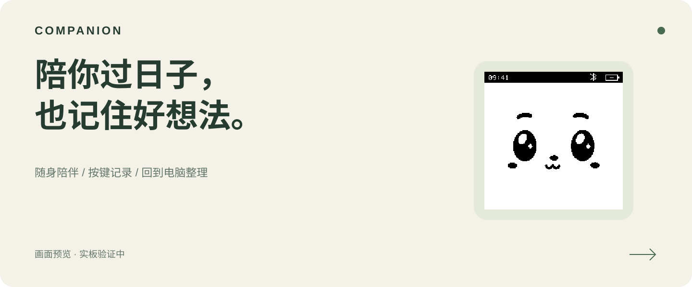
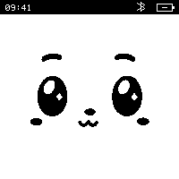

English · 简体中文
Companion Type
一个愿意带在身边的小伙伴，也给重要的话和突然冒出的想法留个位置。
认识 Companion · 获取 Windows 软件 · 使用指南 · 当前进度 · 固件与设备
开发版 · Windows 是当前使用主线。 已有本地安装与部分实板使用记录，整机验收仍未完成。软件、实体体验和正式发布分别确认，详见当前进度。
三个日常时刻
| 带着它 | 记下来 | 回来看 |
|---|---|---|
| 表情、眨眼、小小的宠物声音。让桌上或包边多一个熟悉的伙伴。 | 在设备上开始录音，看到采集和保存状态，把此刻的话先留下。 | 用 Type 同步，在“我的录音”读文字、搜索和改标题，需要时回听或整理事项。 |


已有屏幕画面预览，非实拍；示例状态不是现场设备读数。宠物保留原表情和饰件；连接电脑后可主动进入短句聊天，回复以屏幕底部文字呈现。扬声器用于短提示，不朗读回复；语音唤醒尚未提供。
获取 Windows 软件
Type 是 Companion 配套的 Windows 电脑软件，用于连接设备、接收录音、在电脑保存和回听。设备上的“电脑查看”指的是这里；纯原音的接收、保存和回听不要求先配置转写或纪要服务。
目前仍为开发候选，公开下载安装入口尚未发布。已经收到本轮交付 MSI 安装包的用户，可直接安装后打开 Companion Type。尚未收到安装包时，需要先从本轮交付方取得 Windows 安装包；本页还不能完成公开下载。当前没有已交付的原生手机安装包。
从一小段试录开始
- 安装并打开 Companion Type，在设备开启配对，用 Type 连接 Companion 并同步时间。日常连接走蓝牙，USB-C 用于供电。
- 连接后，在 设备与同步 → 用 Companion 录音 点击 开始录音；结束时点 停止并保存，等待实际保存结果。这条入口先录设备原音，不要求先配置转写服务或选择会议模式。
- 也可以脱离电脑录音：设备醒着时，长按物理按键约一秒开始，再长按停止。睡眠后的第一次完整按压只唤醒；触摸快捷和当前样机的屏幕调试短按分配见使用指南。
- 同步后在 我的录音 按时间或内容找到它，起一个好找的名字。有文字就直接读，需要时再回听；接收、完整保存和设备空间回收分开显示。暂停同步不等于停止设备采音。
- 只有原音时点 转文字，需要事项时再点 整理重点。检查结果后编辑或导出。纯录音、本地保存和回听不依赖云服务配置。
设备显示“已保存”后，电脑上的文件还需要同步。 回到 Type，等待这条录音显示本机原音已保存，再从会议库回听；设备上的保存提示不等于电脑已经接收完整文件。若 Type 没有连接或还在接收，先保留设备录音，稍后连接继续同步。
设备的录音空间按环形消费方式复用。Type 耐久保存完整原音与可发现索引、核对完整性后，才确认消费已封口的设备段；增长中的尾段不会提前删除。设备副本回收后，电脑上的原音仍在。当前实现与实板资格分别记录在开发状态，短录、构建或安装不代表完整产品验收。
首次使用向导会记住每台设备的进度。浏览器演示不能替你完成真实设备检查。USB-C 仅供电；日常连接走蓝牙。
留下原音，再把内容变得好用
| 想做什么 | Type 候选中的功能 |
|---|---|
| 先专心听，之后再整理 | 先录后整理；回到电脑拉录、转写、生成纪要 |
| 连接电脑边录边看 | 在线速记；需要可用的流式转写服务 |
| 找回一句话 | 按标题、转写全文和两模式纪要搜索，回听本地原音 |
| 改成自己的记录 | 编辑标题与纪要；标记人工修改，保留另一模式版本，检查保存冲突 |
| 把结果带走 | Markdown / TXT / JSON、原音；真实对齐时间支持 SRT。清单可设置共同时间和负责人、导出 TXT 或显示文字二维码；明确确认日期后可导出日历安排并逐项选择提醒，仍需在接收日历中导入 |
| 知道文件是否安全 | 分开显示设备副本、同步、本机保存及回收；保存失败可重试 |
人工修改不会被后台恢复覆盖。明确点击重生成会替换原录制模式的纪要；查看另一模式不会改变这个范围。编辑后不保留过期的结构化行动项。普通离线录音按原录制模式生成纪要；在线会议完整结束路径可生成两份模式纪要。
按你的节奏陪伴
标准、活泼、安静模式有明确说明，Type 提供可停止的 10 秒无声示意预览。预览不改变设备设置。安静时段依赖正确设备时间；录音期间普通提示音被抑制，保存与错误仍通过状态呈现。
服务与内容去向
原音和录音库保存在本机。云转文字会发送相关音频，云整理会发送所选文字及明确选择的补充；聊天可使用本句内容和你允许引用的记忆。当前使用现有服务配置，正式账号、费用和额度以实际交付说明为准；“先录后整理”不表示完全本地识别，显示“已配置”也不代表服务调用成功。
支持连续录音的配套设备不预设结束时间，手动停止或设备空间用完时结束；旧设备可能仍要求设置时长，以界面提示为准。长会尽量保持连接并同步；空间满后只保留已录内容。录音可按封口段同步并归到同一条记录；中断、缺段或故障不能当作整场完整。详细步骤见使用指南。
一个产品，三个部分
| 仓库 | 负责什么 |
|---|---|
| Companion Type（这里） | 连接、同步、会议库、转写、纪要、编辑与导出 |
| Companion Firmware | 表情、交互、录音、存储、蓝牙传输、声音和恢复 |
| Companion Hardware | 电路、结构、制造资料与实板验证 |
Windows 是当前桌面产品路径；浏览器和 mobile 目录用于演示/开发，不代表原生手机版本已交付。目前尚未提供正式下载和购买入口。